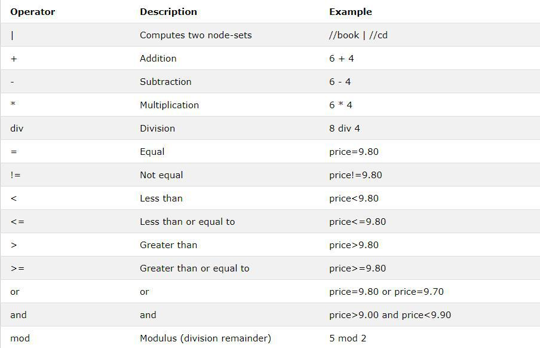

ข้อเสนอแนะ:

ด้านล่างนี้คือรายการของโอเปอเรเตอร์ที่สามารถใช้ในนิพจน์ XPath
XSLT - ภาษาสำหรับการแปลงเอกสาร XML
XPath - ภาษาสำหรับการนำทางในเอกสาร XML
XSL-FO - ภาษาสำหรับจัดรูปแบบเอกสาร XML (ยกเลิกในปี 2013)
XQuery - ภาษาสำหรับการสอบถามเอกสาร XML
XSLT ย่อมาจาก XSL Transformations
XSLT เป็นส่วนที่สำคัญที่สุดของ XSL
XSLT ใช้ XPath เพื่อนำทางในเอกสาร XML
XQuery เป็นตัวพิมพ์เล็กและใหญ่
องค์ประกอบองค์ประกอบและตัวแปร XQuery ต้องเป็นชื่อ XML ที่ถูกต้อง
ค่าสายอักขระ XQuery สามารถอยู่ในเครื่องหมายคำพูดเดี่ยวหรือสองคำ
ตัวแปร XQuery กำหนดด้วย $ ตามด้วยชื่อเช่น $ bookstore
ความคิดเห็น XQuery ถูกคั่นด้วย (: และ :) เช่น (: XQuery Comment :)